# Load the tidyverse and palmerpenguins package.
library(tidyverse)
library(palmerpenguins)4 Workshop content
4.1 Get to know the data
For this workshop we will be using is from the palmerpenguins package. The data were collected and made available by Dr. Kristen Gorman and the Palmer Station, Antarctica LTER, a member of the Long Term Ecological Research Network. See the package website for more details.1
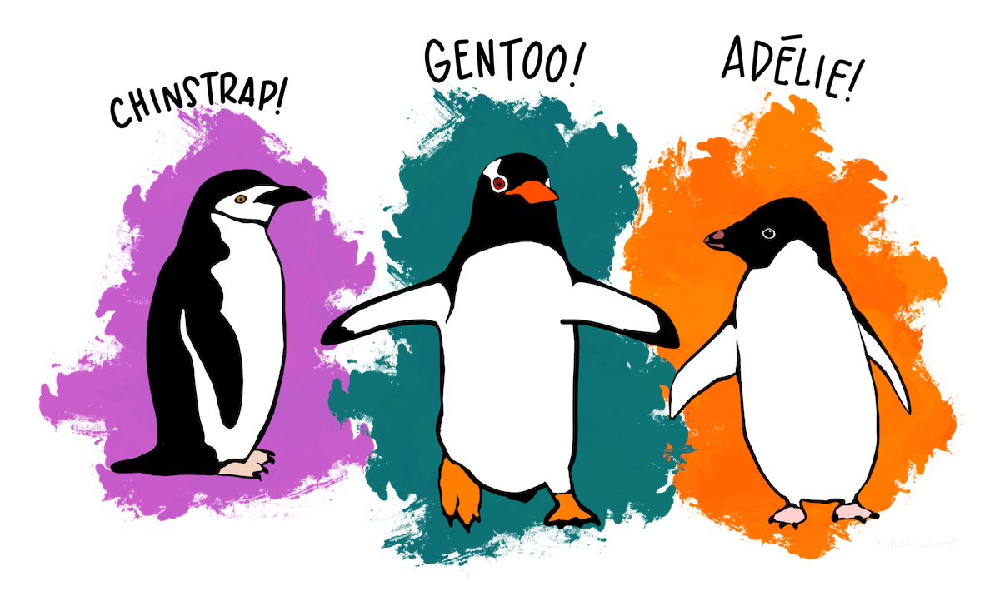
# Load the data
data(penguins)
penguins
## # A tibble: 344 × 8
## species island bill_length_mm bill_depth_mm flipper_length_mm body_mass_g
## <fct> <fct> <dbl> <dbl> <int> <int>
## 1 Adelie Torgersen 39.1 18.7 181 3750
## 2 Adelie Torgersen 39.5 17.4 186 3800
## 3 Adelie Torgersen 40.3 18 195 3250
## 4 Adelie Torgersen NA NA NA NA
## 5 Adelie Torgersen 36.7 19.3 193 3450
## 6 Adelie Torgersen 39.3 20.6 190 3650
## 7 Adelie Torgersen 38.9 17.8 181 3625
## 8 Adelie Torgersen 39.2 19.6 195 4675
## 9 Adelie Torgersen 34.1 18.1 193 3475
## 10 Adelie Torgersen 42 20.2 190 4250
## # ℹ 334 more rows
## # ℹ 2 more variables: sex <fct>, year <int>penguins is a simplified version of penguins_raw.
glimpse(penguins)
## Rows: 344
## Columns: 8
## $ species <fct> Adelie, Adelie, Adelie, Adelie, Adelie, Adelie, Adel…
## $ island <fct> Torgersen, Torgersen, Torgersen, Torgersen, Torgerse…
## $ bill_length_mm <dbl> 39.1, 39.5, 40.3, NA, 36.7, 39.3, 38.9, 39.2, 34.1, …
## $ bill_depth_mm <dbl> 18.7, 17.4, 18.0, NA, 19.3, 20.6, 17.8, 19.6, 18.1, …
## $ flipper_length_mm <int> 181, 186, 195, NA, 193, 190, 181, 195, 193, 190, 186…
## $ body_mass_g <int> 3750, 3800, 3250, NA, 3450, 3650, 3625, 4675, 3475, …
## $ sex <fct> male, female, female, NA, female, male, female, male…
## $ year <int> 2007, 2007, 2007, 2007, 2007, 2007, 2007, 2007, 2007…penguins has 8 columns:
-
species: Three penguin species. -
island: Islands in Palmer Archipelago, Antarctica (Biscoe, Dream or Torgersen). -
bill_length_mm: Numeric value in mm. -
bill_depth_mm: Numeric value in mm. -
flipper_length_mm: Numeric value in mm. -
body_mass_g: Integer of mass in grams. -
sex: female and male -
year: Integer from 2007 to 2009.
summary(penguins)Note the existence of missing data in all but species and island columns. summary() gives a good overview of the data and the counts for the species, island, and sex.
4.2 Warming up: Exploratory plots
4.2.1 Distribution of a categorical variable
4.2.2 Distribution of a numeric variable
Let’s look at the distribution of a numeric variable and add in the species.
ggplot(data = penguins,
mapping = aes(x = body_mass_g, fill = species)) +
geom_histogram(alpha = 0.8)
## `stat_bin()` using `bins = 30`. Pick better value `binwidth`.
## Warning: Removed 2 rows containing non-finite outside the scale range
## (`stat_bin()`).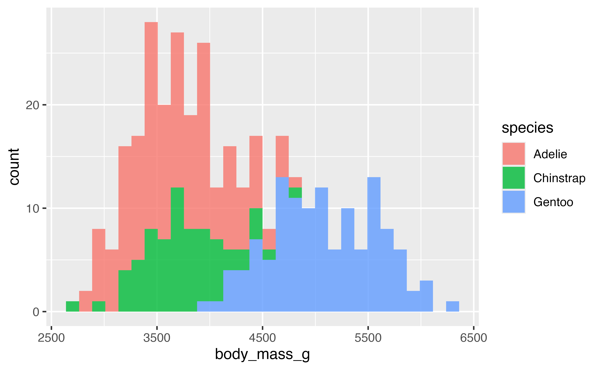
How does changing the binwidth affect the plot.
Try with a different numeric variable.
Now let’s try with geom_density():
ggplot(data = penguins,
mapping = aes(x = flipper_length_mm, fill = species)) +
geom_density(alpha = 0.8)
## Warning: Removed 2 rows containing non-finite outside the scale range
## (`stat_density()`).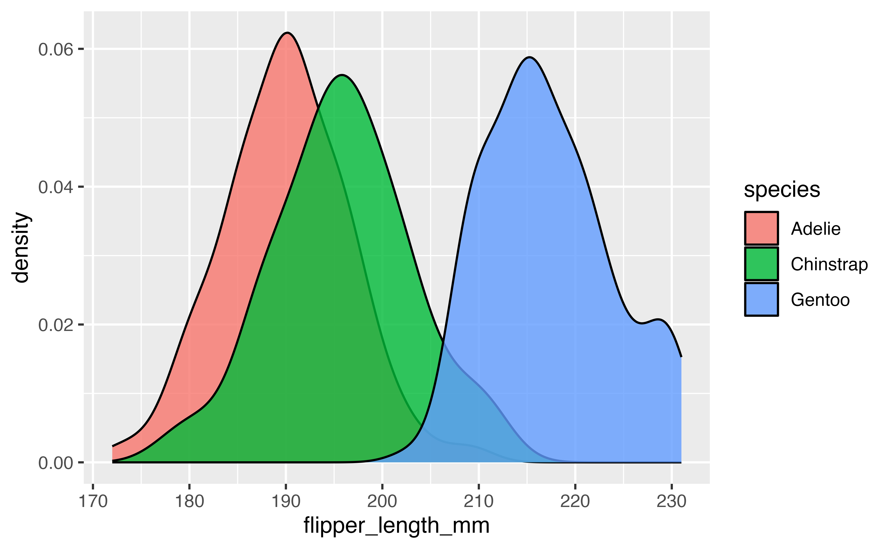
4.2.3 Visualizing relationship of two numeric variables
ggplot(data = penguins,
mapping = aes(x = flipper_length_mm, y = body_mass_g)) +
geom_point(aes(color = species, shape = species))
## Warning: Removed 2 rows containing missing values or values outside the scale range
## (`geom_point()`).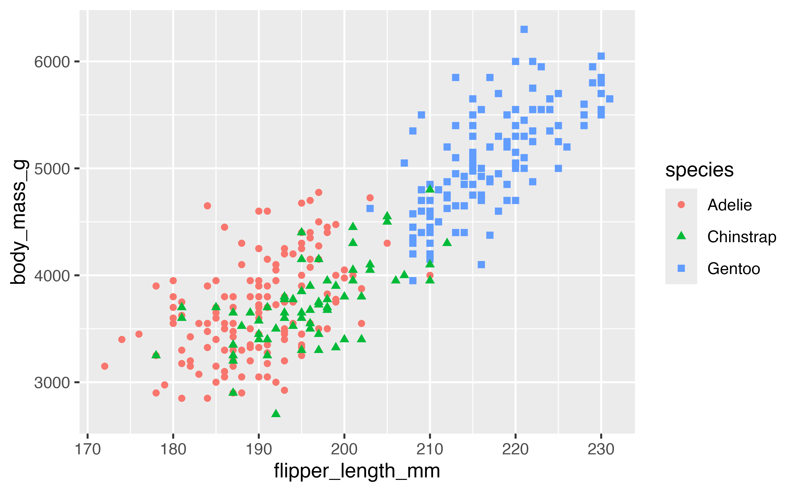
Try with different numeric variables.
4.3 Geoms, stats, and positions
You might notice that while the basic structure of creating these plots is similar, there are subtle differences. We provided a variable from the data for y axis of the scatterplot (y = body_mass_g) but not for the barplot, histogram, or density plot. If you look at the y-axis of these plots, you will notice that they have names not found in the penguins data. They all work by performing a statistical transformation to calculate the y -axis. The geoms used above default to the following stats.
| Geom | Stat | Stat function |
|---|---|---|
geom_bar() |
"count" |
stat_count() |
geom_histogram() |
"bin" |
stat_bin() |
geom_density() |
"density" |
stat_density() |
geom_point() |
"identity" |
stat_identity() |
geom_boxplot() |
"boxplot" |
stat_boxplot() |
You can create a plot with either a geom, changing the default stat if you want or with a stat function (stat_*()) and choosing the geom to represent the stat. For instance, use stat_count() to recreate the first barplot.
ggplot(penguins,
aes(x = island)) +
stat_count(geom = "bar")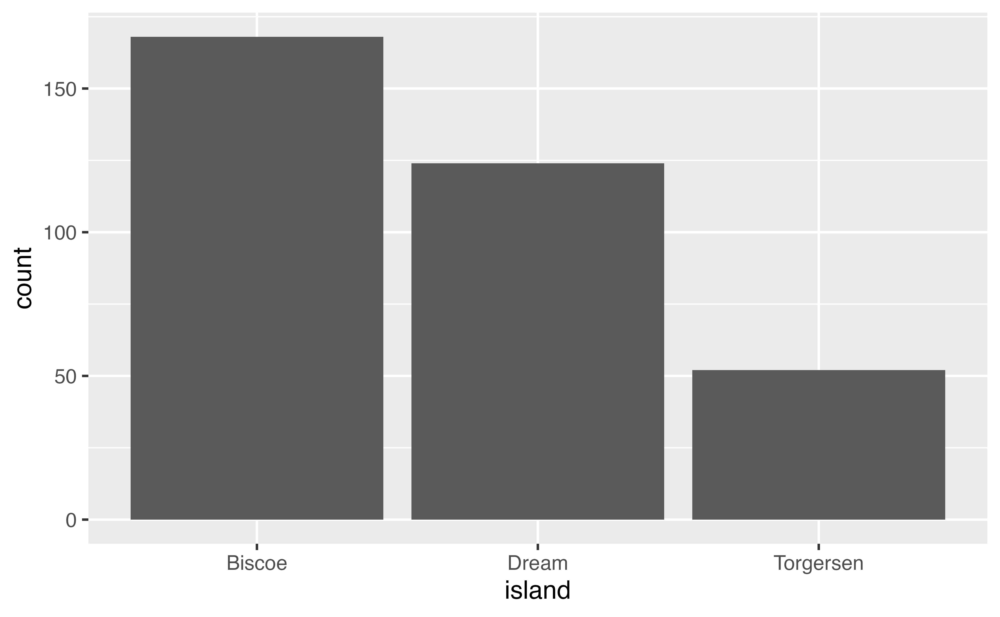
This may not seem that interesting at first, but intermixing geoms and stats creates opportunities for plots that represent more complex forms of analysis, for instance a bar plot of the average body weight of the penguins by island. This can be written using either geom_bar() or stat_summary().
# geom with stat
penguins |>
ggplot(aes(x = island, y = body_mass_g)) +
geom_bar(stat = "summary", fun = "mean")
## Warning: Removed 2 rows containing non-finite outside the scale range
## (`stat_summary()`).
# stat with geom
penguins |>
ggplot(aes(x = island, y = body_mass_g)) +
stat_summary(geom = "bar", fun = "mean")
## Warning: Removed 2 rows containing non-finite outside the scale range
## (`stat_summary()`).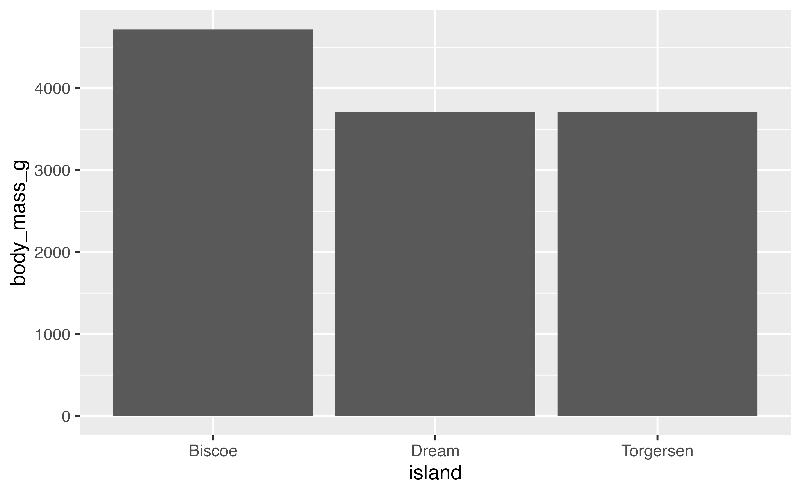

You might want to provide additional information such as error bars indicating the standard deviation of the mean. We need to add another geom layer and use stat_summary() with geom errorbar. Let’s also remove the rows with missing data for body_mass_g.
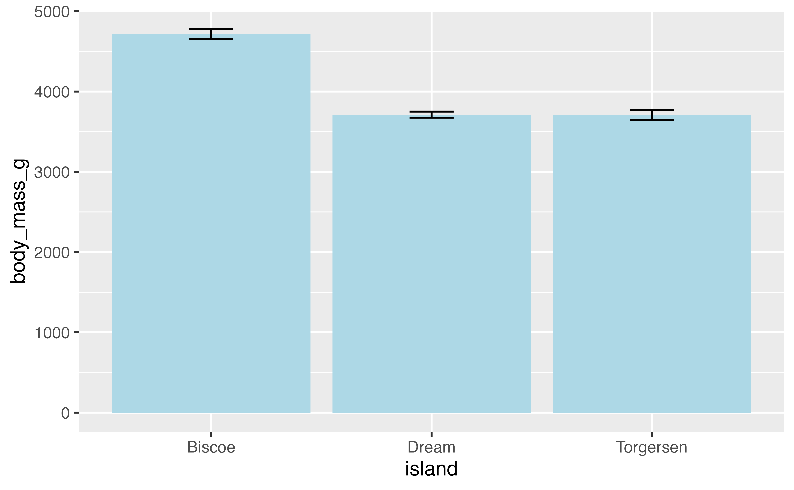
4.3.1 Position
Finding the average mass of penguins by island is not very meaningful because there are multiple species per island. It is possible group the penguins by species for each island using the fill aesthetic, which brings us to the question of how the separate bars are positioned.
Each geom has a position argument that takes either "identity", "stack", "dodge", "dodge2", or "fill", or, alternatively, the corresponding position_*() functions that allow more freedom in tweaking aspects of the position.
The default position for geom_bar() is position_stack(). In this instance, placing the groups alongside each other with "dodge" will make it possible to keep the error bars. "dodge2" provides space between the bars of the groups. Note that using the position_*() function makes it possible to better control the behavior such as maintaining the same width for all bars than using the character equivalent.
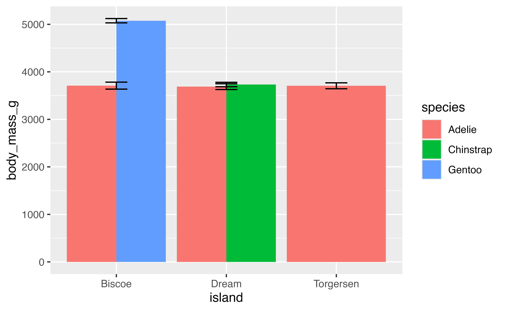
This works, but we also need to adjust the position of the errorbars. We can also use position_dodge2(preserve = "single") to make the total width of the Torgersen bar be the same as the others. To get the errorbars to have the same widths across all of the bars it is necessary to set a matching width for the geoms and then using padding to set the width of the error bars.
penguins |>
filter(!is.na(body_mass_g)) |>
ggplot(aes(x = island, y = body_mass_g, fill = species)) +
geom_bar(stat = "summary", fun = "mean", width = 1,
position = position_dodge2(preserve = "single")) +
stat_summary(geom = "errorbar",
fun.data = mean_se,
width = 1,
position = position_dodge2(preserve = "single",
padding = 0.6))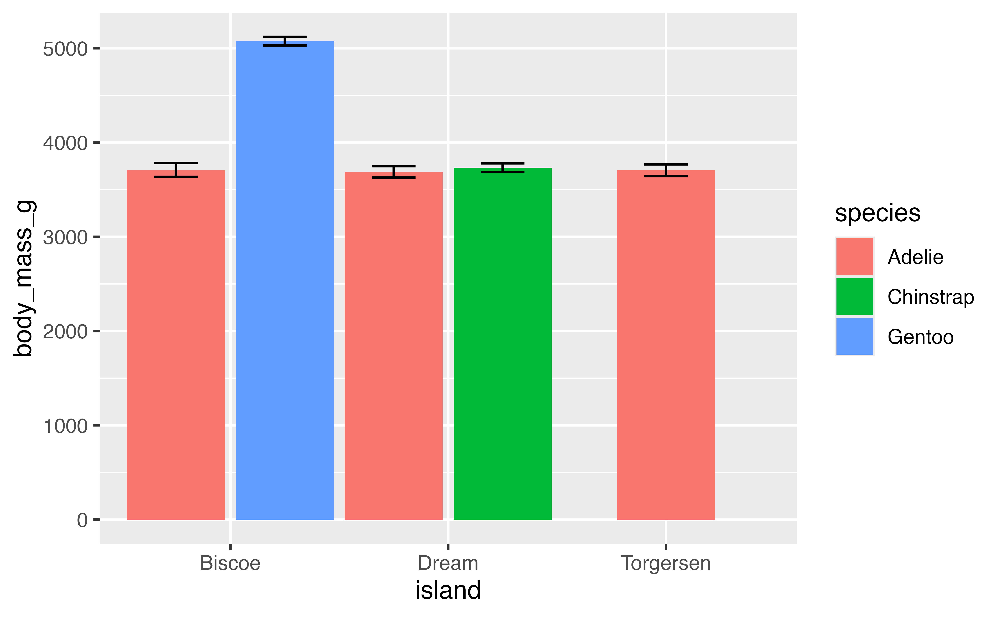
let’s save this plot as p to build on in the next section.
p <- last_plot()Available positions include:
-
position_identity(): Do not adjust position -
position_dodge(): Dodge overlapping objects side-to-side; useful withgeom_bar(). -
position_dodge2(): Dodge overlapping objects side-to-side with a gap; used withgeom_boxplot(). -
position_jitter(): Add randomwidthandheightadjustments to data; default forgeom_jitter(). -
position_jitterdodge(): Dodge and jitter; primarily useful for jittering points within dodged box plots. -
position_nudge(): Add manual adjustments toxory; built intogeom_text()to move labels away from points. -
position_stack(): Stacks bars on top of each other; default ingeom_bar()to stack groups within a discrete variable. -
position_fill(): Stacks bars and standardizes each stack to have constant height to show ratios.
4.4 Axes scales and zooming
By default ggplot2 expands the scale of axes by 5% on each side for continuous variables and by 0.6 units on each side for discrete variables. This gives plots a bit of padding, but you may not always want this. Padding can be removed by setting scale_x/y_*(expand = expansion(0) or coord_cartesian(expand = FALSE). When removing padding completely, it may be beneficial to turn clip = "off" to allow points plotted outside the panel region so they are not cut in half.
p +
coord_cartesian(expand = FALSE, clip = "off")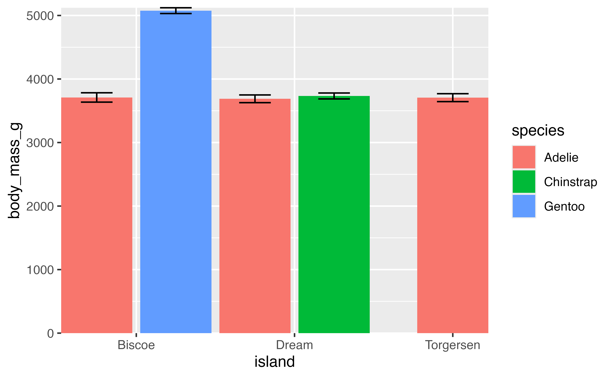
But you may want to give a bit of padding to one side of the axis scale. For instance, the upper limit of y. This can be done with expand = expansion(mult = c(0, 0.05)).
p +
scale_x_discrete(expand = expansion(0)) +
scale_y_continuous(expand = expansion(mult = c(0, 0.05)))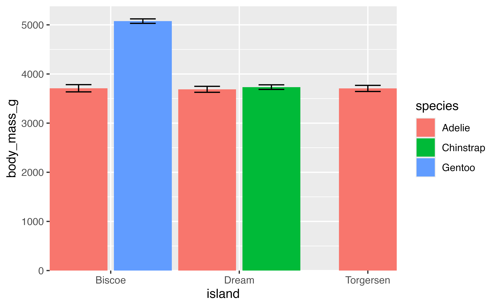
4.4.1 Zooming vs filtering
There may be instances where you would like to zoom in on a plot. Our current barplot begins at 0, but no penguin is going to weigh 0 grams. The lightest penguin in the data set is:
min(penguins$body_mass_g, na.rm = TRUE)
## [1] 2700So what would happen if we set the minimum for the y scale to 2500 and used NA to maintain the same maximum?
p +
scale_x_discrete(expand = expansion(0)) +
scale_y_continuous(limits = c(2500, NA),
expand = expansion(mult = c(0, 0.05)))
## Warning: Removed 5 rows containing missing values or values outside the scale range
## (`geom_bar()`).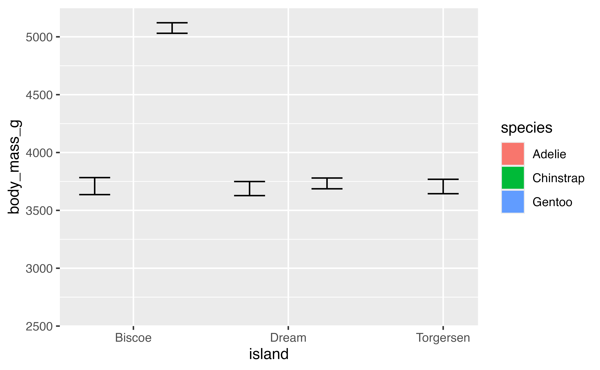
The result is clearly something we did not intend. This is because setting limits with scale_x/y_*() subsets data; all values outside the range become NA. This will lead to changes in the data for lines or polygons. To zoom in on the data you need to use coord_cartesian() with the xlim or ylim argument.
p +
scale_x_discrete(expand = expansion(0)) +
scale_y_continuous(expand = expansion(mult = c(0, 0.05))) +
coord_cartesian(ylim = c(2500, NA))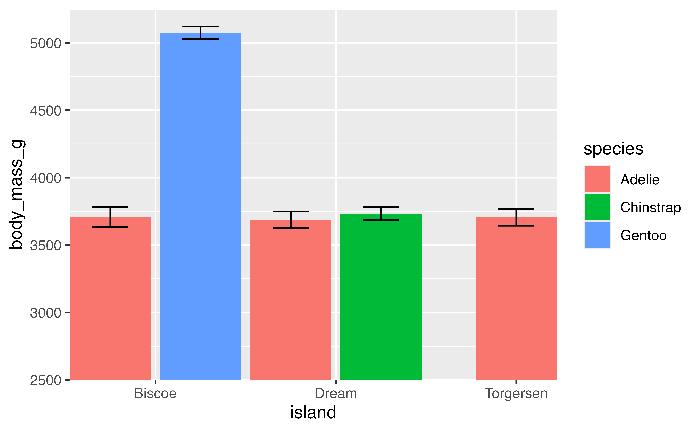
4.4.2 Save the plots for later
p1 <- last_plot()
# Create similar plot with flipper_length_mm
min(penguins$flipper_length_mm, na.rm = TRUE)
## [1] 172
p2 <- penguins |>
filter(!is.na(flipper_length_mm)) |>
ggplot(aes(x = island, y = flipper_length_mm, fill = species)) +
geom_bar(stat = "summary", fun = "mean", width = 1,
position = position_dodge2(preserve = "single")) +
stat_summary(geom = "errorbar",
fun.data = mean_se,
width = 1,
position = position_dodge2(preserve = "single",
padding = 0.6)) +
scale_x_discrete(expand = expansion(0)) +
scale_y_continuous(expand = expansion(mult = c(0, 0.05))) +
coord_cartesian(ylim = c(150, NA))
p2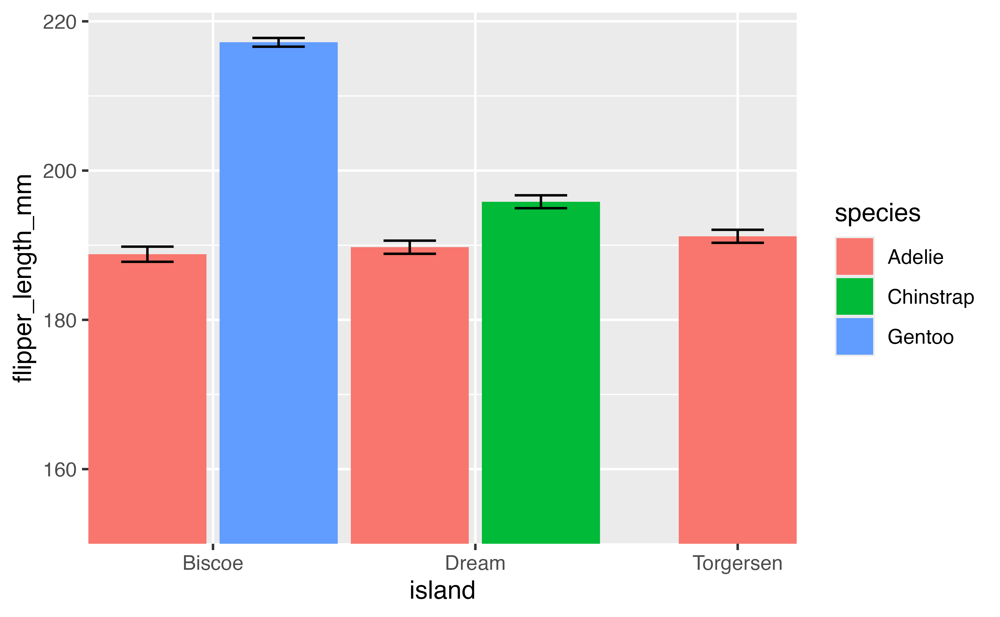
4.5 Axes scales and guides
Scales are the basis for guides that used to interpret the plot: axes and legends. Let’s create a scatterplot comparing the flipper length to the body mass of the penguins by species to provide a basis for looking more in depth at the guides of a plot.
p <- penguins |>
ggplot(aes(x = flipper_length_mm,
y = body_mass_g)) +
geom_point(aes(color = species,
shape = species),
na.rm = TRUE,
size = 2, alpha = 0.8)
p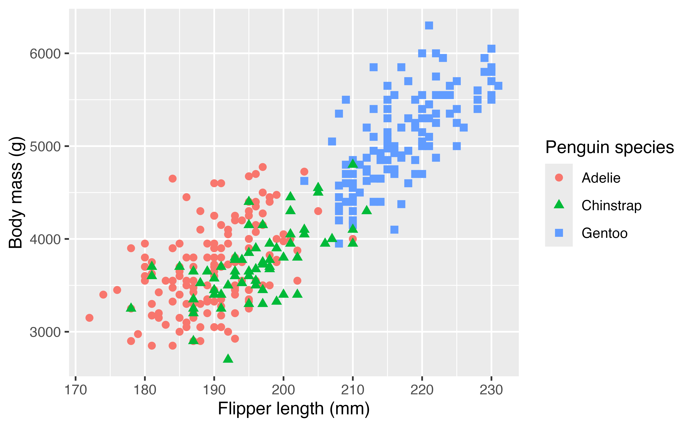
4.5.1 Labels
Firstly, we can change the labels of the x and y axes and the legend with labs(). By providing the same label for color and shape the legend remains combined.
p +
labs(x = "Flipper length (mm)",
y = "Body mass (g)",
color = "Penguin species",
shape = "Penguin species")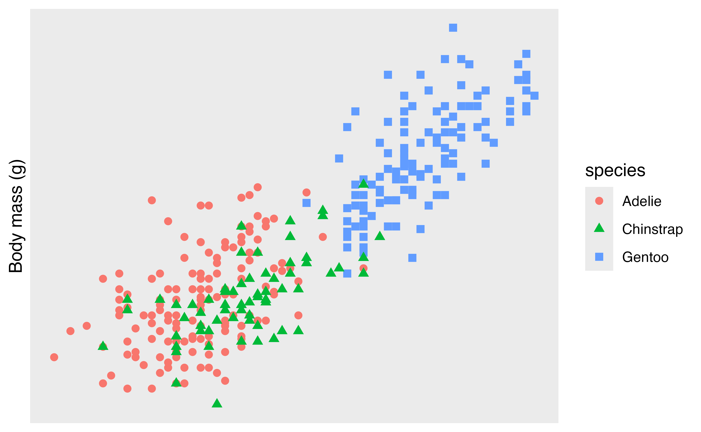
4.5.2 Axes breaks
To change the axis text and the grid lines you can use the breaks and labels arguments in scale_x/y_*(). breaks takes a numeric vector and labels takes a character vector. You can remove all breaks and labels with NULL.
p +
scale_x_continuous(name = NULL, breaks = NULL, labels = NULL) +
scale_y_continuous(name = "Body mass (g)", breaks = NULL, labels = NULL)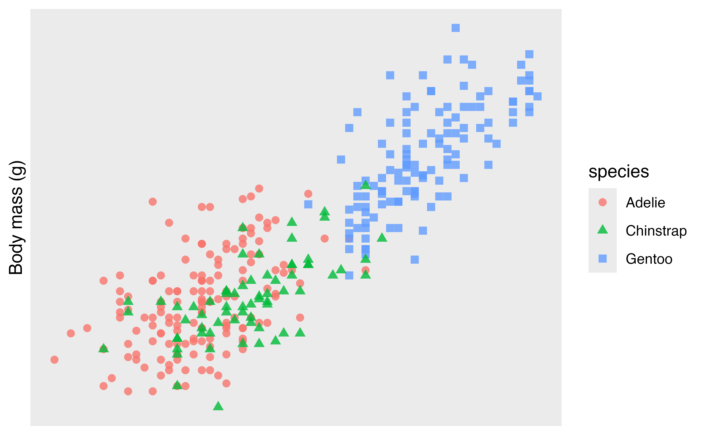
You can be quite creative with choosing breaks.
p +
scale_x_continuous(breaks = seq(170, 230, by = 20),
minor_breaks = seq(170, 230, by = 5)) +
scale_y_continuous(breaks = 5:13*500,
minor_breaks = NULL)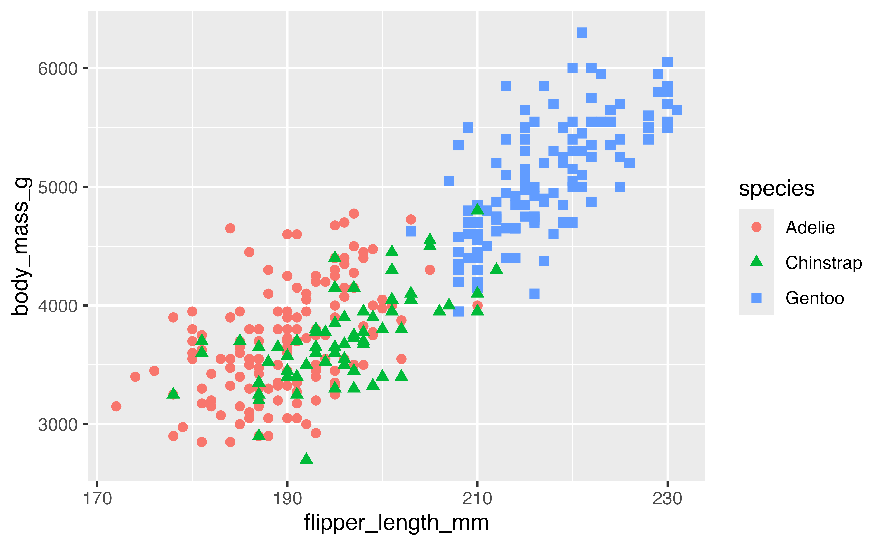
Or you can choose the number of breaks:
p +
scale_x_continuous(n.breaks = 4)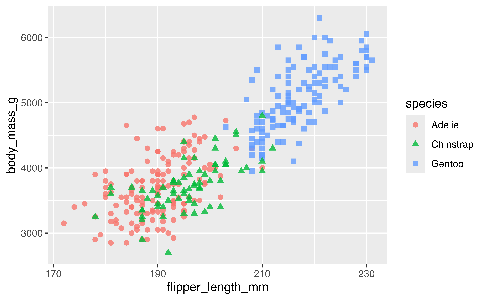
4.5.3 Axes labels: scales package
The scales package provides useful helpers for working with axes labels. The package is generally called using the pkg_name::function() structure.
p +
scale_x_continuous("Flipper length",
n.breaks = 4,
labels = scales::label_number(suffix = "mm")) +
scale_y_continuous(name = "Body mass",
labels = scales::label_number(
scale = 0.001,
suffix = "kg"))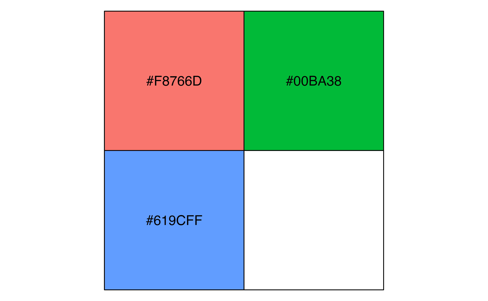
Other scales formats include:
-
label_bytes(): formats numbers as kilobytes, megabytes etc. -
label_comma(): formats numbers as decimals with commas added. -
label_currency(): formats numbers as currency. -
label_ordinal(): formats numbers in rank order: 1st, 2nd, 3rd etc. -
label_percent(): formats numbers as percentages. -
label_pvalue(): formats numbers as p-values: <.05, <.01, .34, etc.
4.6 Color scales
To style your plot and make it your own you will want to choose your own color palette. So far we have been using a discrete color palette (scale_color_discrete()) and to keep things simpler, we will stick with that. We can use scales::hue_pal() to recreate or access the discrete color palette used for a plot, making sure to use the length of the discrete values, as the colors used change with the length of the palette. scales::hue_pal() prints out the color hex values, while scales::show_col() creates a plot of the colors.
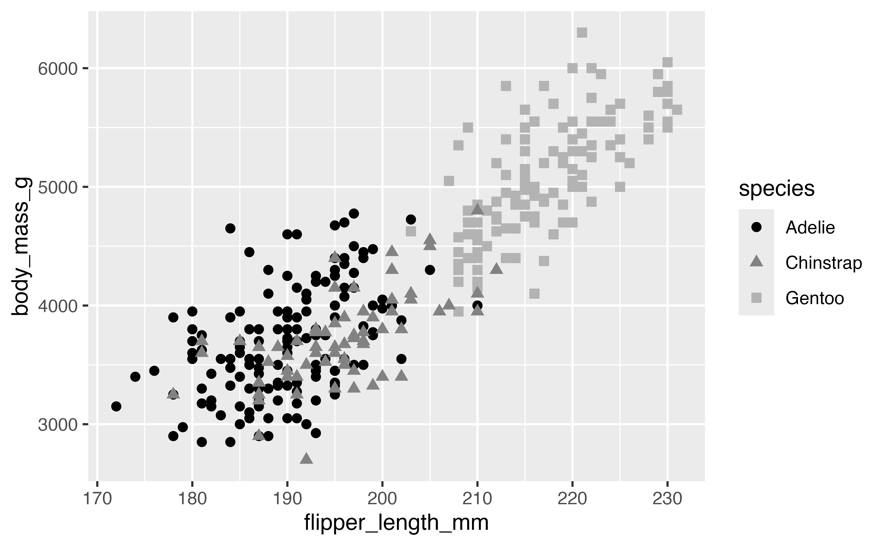
Other discrete scale color functions built into ggplot2 are scale_color_grey(), scale_color_brewer() from the Color Brewer cartography palettes, and scale_color_viridis_d() from the widely used viridis color palettes. Try them out.
-
scale_color_brewer()palettes:palette- Diverging: BrBG, PiYG, PRGn, PuOr, RdBu, RdGy, RdYlBu, RdYlGn, Spectral
- Qualitative: Accent, Dark2, Paired, Pastel1, Pastel2, Set1, Set2, Set3
- Sequential: Blues, BuGn, BuPu, GnBu, Greens, Greys, Oranges, OrRd, PuBu, PuBuGn, PuRd, Purples, RdPu, Reds, YlGn, YlGnBu, YlOrBr, YlOrRd
-
scale_color_viridis_d()palettes:option- “magma” (or “A”), “inferno” (or “B”), “plasma” (or “C”), “viridis” (or “D”), “cividis” (or “E”), “rocket” (or “F”), “mako” (or “G”), “turbo” (or “H”)
p +
scale_color_grey(start = 0, end = 0.7)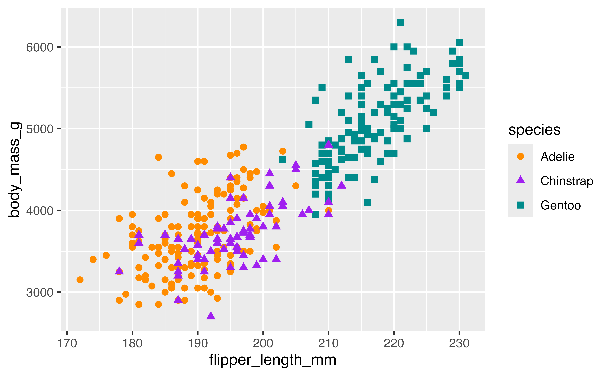
An alternative is to choose colors manually, either using named R colors or hex values. The documentation site for palmerpenguins uses scale_color_manual()
p +
scale_color_manual(values = c("darkorange", "purple", "cyan4"))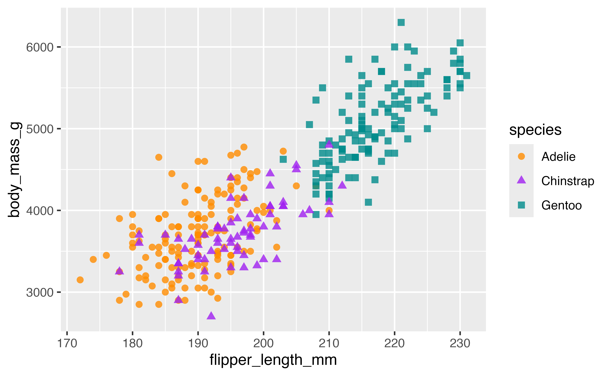
4.6.1 Color packages with paletteer
paletteer provides a common API for accessing dozens of palette packages and thousands of color palettes. The basic structure is function("package::palette").
- Lists of palettes
-
paletteer_packages: data frame of all color packages included. -
palettes_c_names: data frame of continuous palettes. -
palettes_d_names: data frame of discrete palettes. -
palettes_dynamic_names: data frame of dynamic discrete palettes.
-
- Scale functions
library(paletteer)
p +
scale_color_paletteer_d("nationalparkcolors::BlueRidgePkwy",
direction = -1)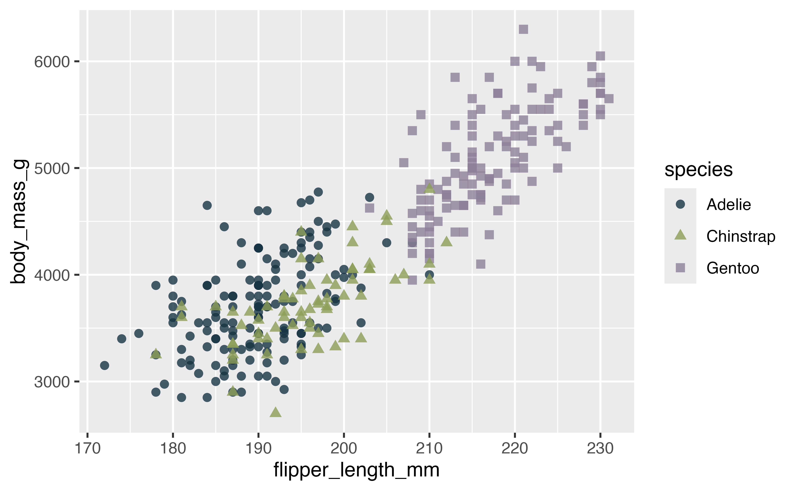
4.7 Annotations
There are many ways you can annotate a plot. A first step is often to label your points or a subset of the points in the plot. geom_text() and geom_label() provide this functionality, but the ggrepel package uses an algorithmic approach to minimize overlaping the labels with the points. The Examples vignette does a good job of showing the wide range of features available in ggrepel.
Let’s first create a subset of the penguins data, here taking a random sample.
set.seed(1239)
penguins_sub <- penguins |>
filter(!is.na(body_mass_g), !is.na(flipper_length_mm)) |>
slice_sample(n = 5)library(ggrepel)
p +
geom_text_repel(data = penguins_sub,
aes(label = island),
min.segment.length = 0) # Forces drawing line labels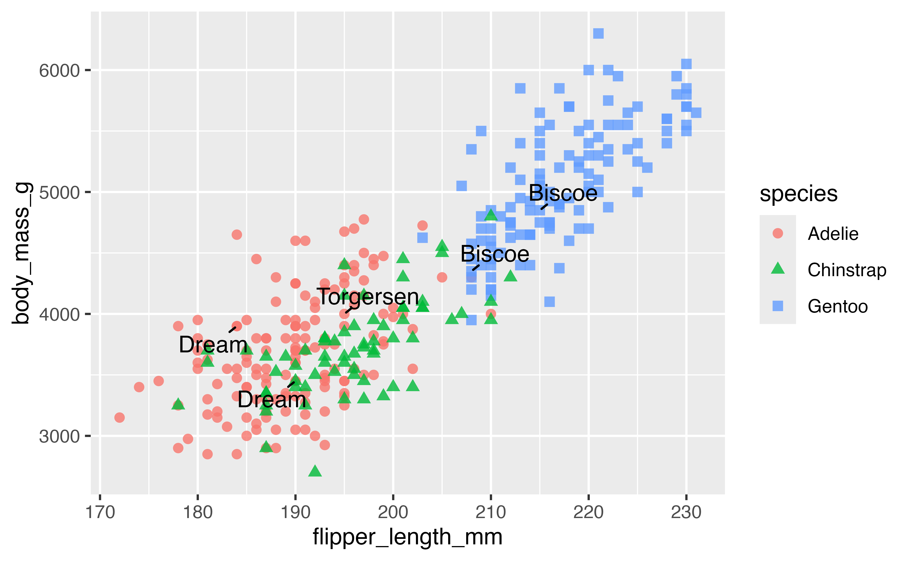
library(ggrepel)
p +
geom_text_repel(data = penguins_sub,
aes(label = island),
min.segment.length = 0,
box.padding = 0.5) # Move text further from points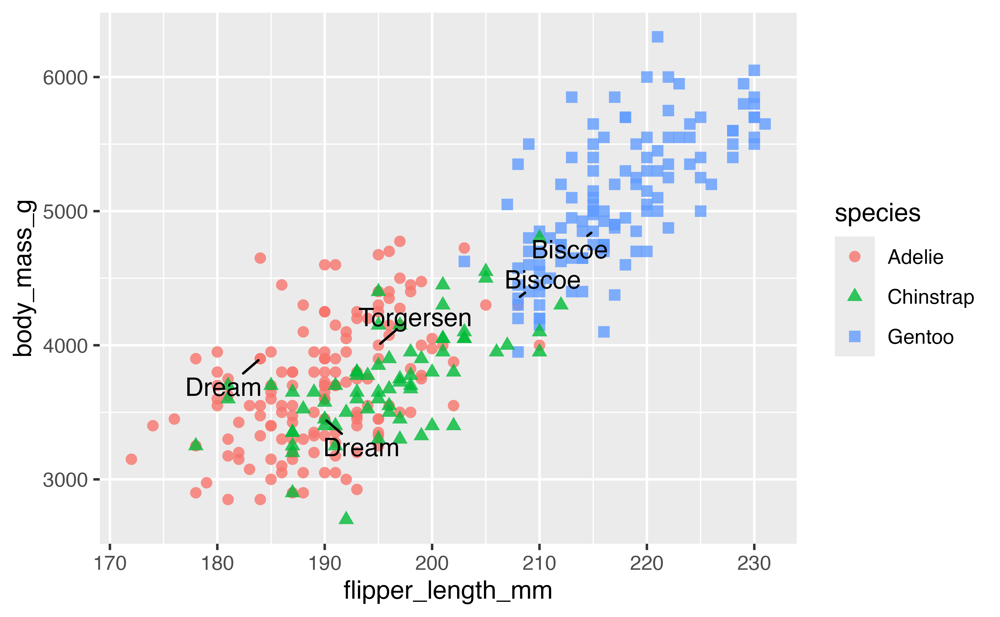
Another good technique is to color the points you want to highlight and add an second larger set of points.
penguins |>
ggplot(aes(x = flipper_length_mm,
y = body_mass_g)) +
geom_point(na.rm = TRUE) +
geom_point(data = penguins_sub, color = "purple") +
geom_point(data = penguins_sub, color = "purple",
size = 3, shape = "circle open") +
geom_text_repel(data = penguins_sub, aes(label = species),
color = "purple")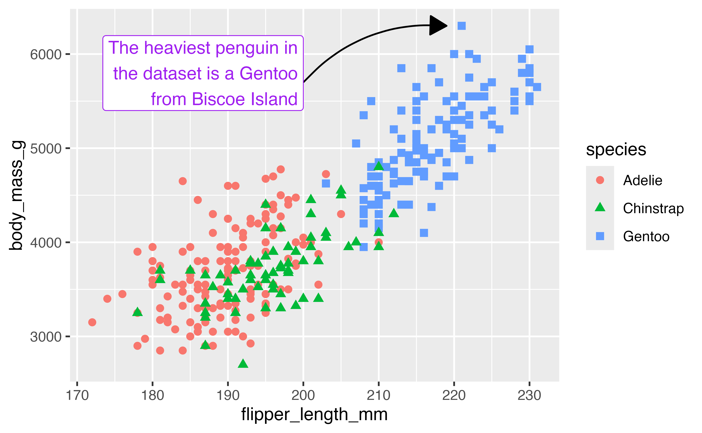
You can also do custom annotations with the annotate() function.
# Find x and y of heaviest penguin
biggest <- penguins |>
slice_max(body_mass_g)
end <- c(biggest$flipper_length_mm, biggest$body_mass_g)
p +
annotate(
geom = "curve",
x = 200, xend = end[[1]] - 2,
y = 5700, yend = end[[2]],
curvature = -0.25,
arrow = arrow(length = unit(0.05, "npc"),
type = "closed")
) +
annotate(
geom = "label",
label = "The heaviest penguin in\nthe dataset is a Gentoo\nfrom Biscoe Island",
x = 200, y = 5400,
hjust = 1,
vjust = 0,
color = "purple"
)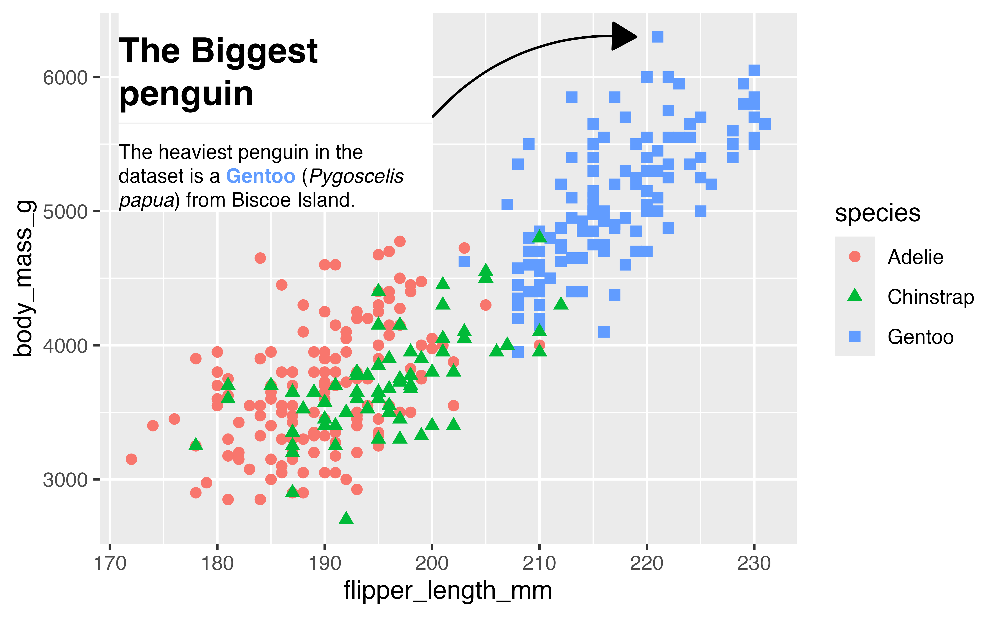
4.8 Fancy text with marquee
marquee lets you add stylized text to your plots using Markdown.
library(marquee)
hex <- scales::hue_pal()(3)[3]
md_text <- marquee_glue(
" ## The Biggest penguin
The heaviest penguin in the dataset is a **{.{hex} Gentoo}** (*Pygoscelis papua*) from Biscoe Island.
")
p +
annotate(
geom = "curve",
x = 200, xend = end[[1]] - 2,
y = 5700, yend = end[[2]],
curvature = -0.25,
arrow = arrow(length = unit(0.05, "npc"),
type = "closed")
) +
annotate(
geom = "marquee",
label = md_text,
x = 200, y = 5000,
size = 3,
fill = "white",
width = 0.45,
hjust = 1,
vjust = 0,
)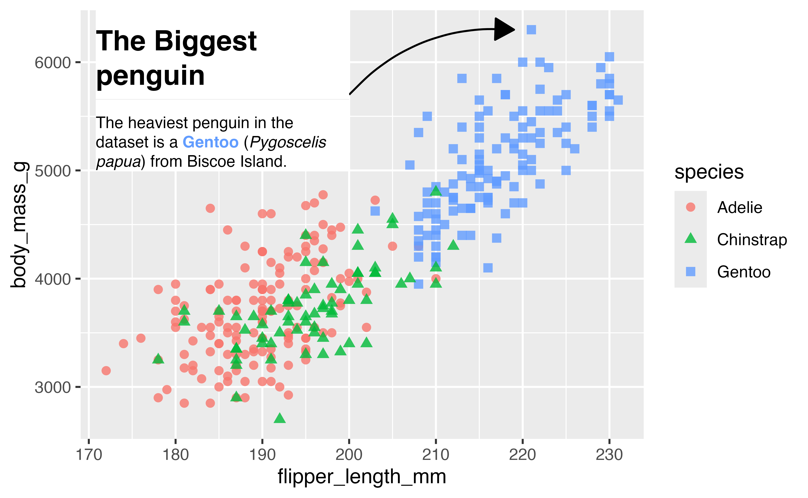
4.9 Theme
The theme affects the aesthetics of non-data components of plots: i.e. titles, labels, fonts, background, grid lines, and legends. There are many, many theme elements that can be changed, but there are two positives to keep in mind:
- Theme elements inherit from others hierarchically (
axis.title.x.bottominherits fromaxis.title.xwhich inherits fromaxis.title, which in turn inherits fromtext). - Theme code can be reused for multiple plots.
p <- p +
scale_color_paletteer_d("nationalparkcolors::BlueRidgePkwy",
direction = -1) +
scale_x_continuous(n.breaks = 4,
labels = scales::label_number(suffix = "mm")) +
scale_y_continuous(labels = scales::label_number(
scale = 0.001,
suffix = "kg")) +
labs(x = "Flipper length",
y = "Body mass",
color = "Penguin species",
shape = "Penguin species")4.9.1 Legend position
ggplot2 automatically creates legends when you map your data to an aesthetic scale, but you may want to remove one or more of the legends. You can do this in multiple ways:
geom_point(show.legend = FALSE)scale_color_discrete(guide = "none")guides(color = "none")theme(legend.position = "none")
p +
theme(legend.position = "none")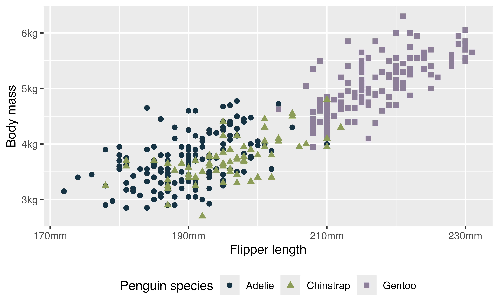
With theme you can move the legend.
p +
theme(legend.position = "bottom", # change position of legend
legend.direction = "horizontal") # and legend directionOr move it inside the plot.
4.9.2 Base themes
Use the base themes to get a start.
p +
theme_minimal()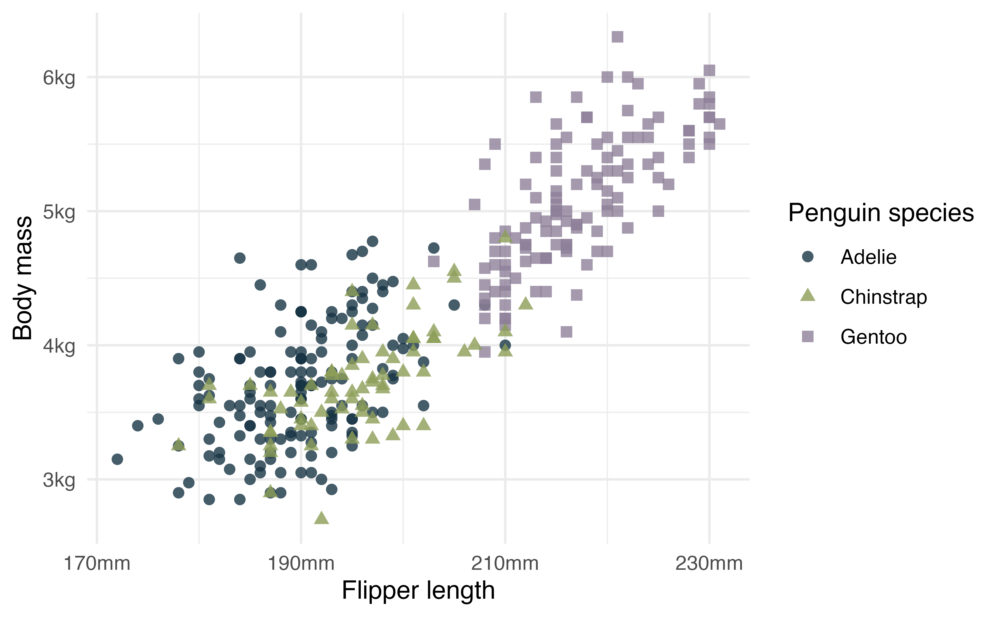
Here you might adjust general aspects of the theme like the font and text size.
4.9.3 System fonts
The packages systemfonts and ragg from Posit work together to give RStudio access to the fonts on your system and use them within plots. This works seamlessly for the most part once you install the packages and tell RStudio to use AGG as its graphic device. This is done in Settings -> General -> Graphics -> Backend. To use ragg in knitr and quarto set knitr::opts_chunk$set(dev = "ragg_png").
# Look at available fonts
systemfonts::system_fonts()p +
theme_minimal(header_family = "EB Garamond",
base_family = "Futura",
base_size = 13)hex <- paletteer_d("nationalparkcolors::BlueRidgePkwy", direction = -1)
md_text <- marquee_glue(
"## Penguin size, Palmer Station LTER
Flipper length (*mm*) compared to body mass (*kg*) of **{.{hex[1]} Adelie}**, **{.{hex[2]} Chinstrap}** and **{.{hex[3]} Gentoo}** Penguins collected from 2007 to 2009 on the islands of Biscoe, Dream, and Torgersen.
")
p3 <- p +
theme_minimal(header_family = "EB Garamond",
base_family = "Futura",
base_size = 13) +
labs(title = md_text) +
theme(plot.title = element_marquee(size = 12, width = 1,
margin = margin(b = 2)),
legend.position = "none")
p3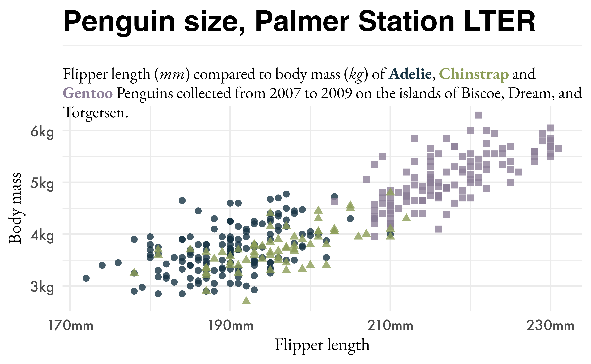
4.10 Saving the plot
The most straightforward way to save the plots you make is with ggsave(). It is quite simple to save the plot. The difficult part comes with creating figures that are reproducible and are the right size and shape. The key to reproducibility is giving plots a set size and aspect ration, but choosing the right one can be an iterative process. The larger size image you make, the smaller the elements of your plot will be. Therefore, you may need to do some back and forth with the size of plot elements and the size of the plot.
A nice way to maintain consistent looking plots in ggsave() is to set width and then set height as a ratio of width.
ggsave(filename = "fig_output/penguin-scatterplot.png",
plot = p3,
width = 6,
height = 0.67 * 6)4.10.1 PNG vs PDF
People have been working hard to make it easier to work with fonts in visualization in R, but there are still important differences. Using the AGG device for PNG files makes it possible to create raster graphics. See this blog post on Fonts in R for more information.
To produce PDF graphics that use custom fonts you may need to use device = cairo_pdf in ggsave(). See this post from Andrew Heiss about Cario graphics for PDFs.
ggsave(filename = "fig_output/penguin-scatterplot.pdf",
plot = p3,
width = 6,
height = 0.67 * 6,
device = cairo_pdf)4.11 Putting plots together with patchwork
patchwork provides a robust way to combine separate ggplots into the same graphic.
First, let’s style the barplots we made earlier to match the scatterplot. set_theme() resets the current theme. Alternatively you can provide a name, such as my_theme to theme elements and use it in a plot with the +.
set_theme(theme_minimal(header_family = "EB Garamond",
base_family = "Futura",
base_size = 13))
p1 <- p1 +
scale_y_continuous(labels = scales::label_number(
scale = 0.001,
suffix = "kg")) +
scale_fill_paletteer_d("nationalparkcolors::BlueRidgePkwy",
direction = -1) +
labs(x = "Island", y = "Body mass") +
theme(legend.position = "none")
## Scale for y is already present.
## Adding another scale for y, which will replace the existing scale.
p2 <- p2 +
scale_fill_paletteer_d("nationalparkcolors::BlueRidgePkwy",
direction = -1) +
labs(x = "Island", y = "Flipper length (*mm*)") +
theme(axis.title.y = element_marquee(),
legend.position = "none")4.11.1 Composing plots
-
+: Add plots in row order -
|: Place plots beside each other -
-: Used to keep each side from each other when building complex plots -
/: Place plots on top of each other -
&: Apply elements to all subplots in the composition -
*: Apply elements to all subplots in the current nesting level- Using
+to add elements of a plot will affect the last plot
- Using
-
(): Use parentheses to group plots
library(patchwork)
p3 / (p1 | p2) +
plot_layout(height = c(3, 2))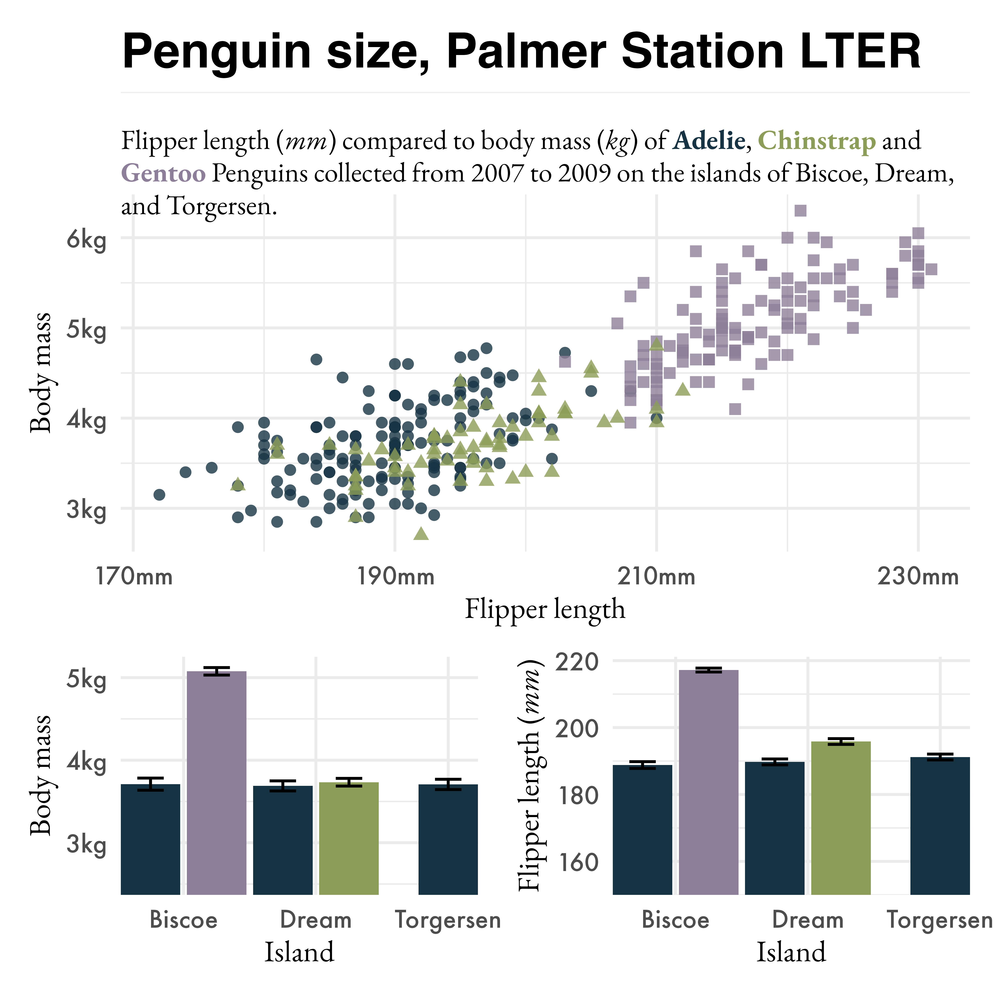
Let’s save the final plot.
ggsave(filename = "patchwork-plot.png",
width = 6,
height = 6)4.12 Conclusion
There are many more things that you can do with ggplot2. This workshop is meant to provide a starting point. Check out the Resources for ggplot2 page for starting points on what you can do with ggplot2.
A version of this data is now built into R as of R 4.5 (released on 11 April 2025). There are some minor differences such as the names of columns, but we will use the data from the package.↩︎